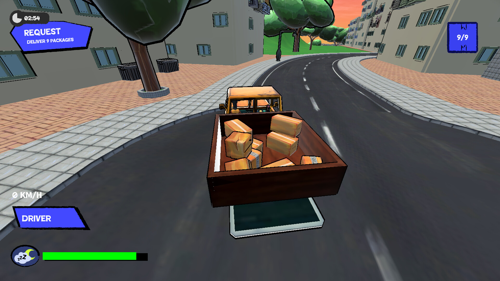
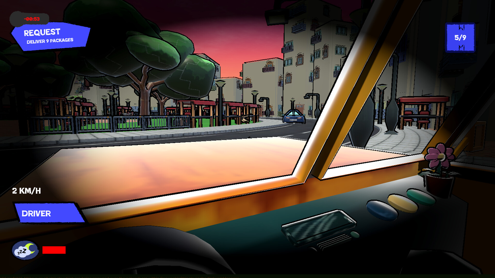
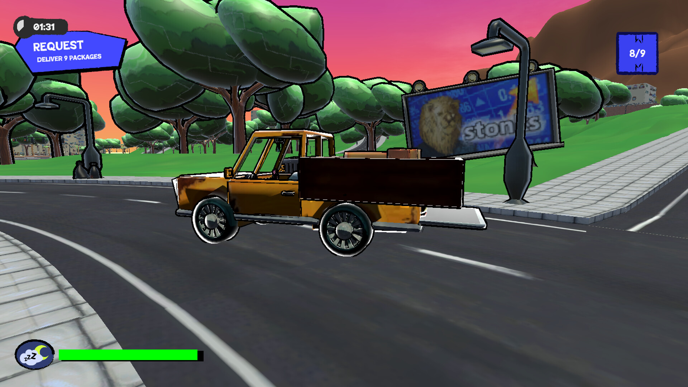
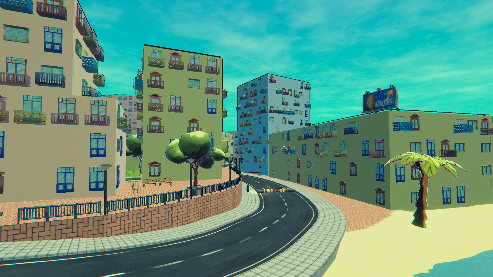
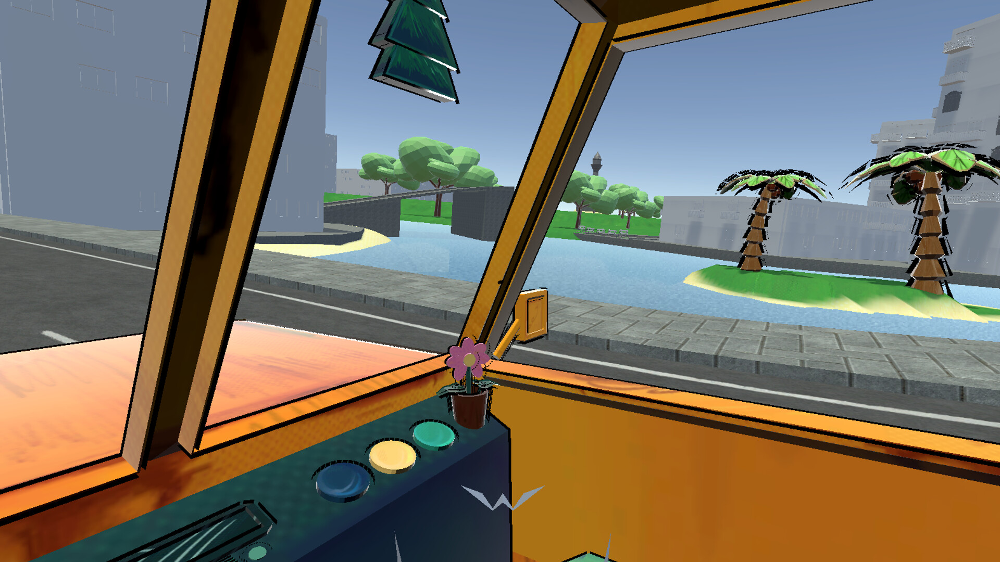

Truckin' It!
Truckin' It! is a fast-paced online two-player co-op delivery game where you have to deliver your cargo as fast as possible while also making sure you don't lose any of the cargo. Trust your friend and work together to achieve the fastest and most efficient delivery run. There are faster but riskier roads, but also longer and safer routes; pick whatever floats your truck! Are you a risky player who likes to be suprised with different hazards and puts everything on the line for the best score? Or do you prefer to play it safe? Enjoy the silly environment and aesthetic while trying to navigate the chaos in the new upcoming hit game, Truckin It!






Project Context
During the CMI Game Minor, I worked together with twenty-one other students to develop a 3D Unity game for the software distribution platform Steam. We had fourteen weeks to build a fully playable game from scratch. The result of this project is our game Truckin' It!
My Role
Within the team, I was the sole sound designer, music producer and technical artist.
As sound designer, I created and processed all sound effects for the game and implemented them using FMOD. As music producer, I composed all of the game's music, which is also available on platforms such as Spotify and Apple Music. This music was likewise integrated into the game through FMOD. The tasks I carried out in the area of audio therefore encompass music production and composition, as well as audio engineering, editing, mixing and mastering.
As technical artist, I was responsible for all technical aspects related to the art and 3D models of the game. This included creating documentation for exporting in Blender and importing into Unity, writing documentation regarding materials, textures and prefabs, writing documentation regarding shaders, setting up the working environment in Unity for all artists, maintaining the various branches of the artists, and reviewing 3D models, textures and prefabs. In addition, I personally worked on creating moodboards (through both visual means and audio and music), concept art, Steam page art, 3D modelling, shader creation and particle systems.
Furthermore, I stepped in wherever I was needed, including assisting with programming in C# and taking on producer tasks.